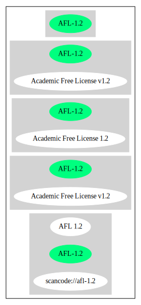

Key |
Value |
|---|---|
Fullname |
Academic Free License v1.2 |
Shortname |
AFL-1.2 |
Rating |
Go |
Classification |
NoCopyleft |
Other Names:
scancode://afl-1.2
AFL 1.2
↑Is OSI Approved (source: SPDX)
↑Rating is: Bronze (source: BlueOak License List)
Homepage: https://spdx.org/licenses/AFL-1.2.html
SPDX: http://spdx.org/licenses/AFL-1.2.json
http://opensource.linux-mirror.org/licenses/afl-1.2.txt
http://wayback.archive.org/web/20021204204652/http://www.opensource.org/licenses/academic.php
http://www.gnu.org/licenses/license-list.html#AcademicFreeLicense
Academic Free License
Version 1.2
This Academic Free License applies to any original work of authorship
(the "Original Work") whose owner (the "Licensor") has placed the
following notice immediately following the copyright notice for the
Original Work:
Licensed under the Academic Free License version 1.2
Grant of License. Licensor hereby grants to any person obtaining a
copy of the Original Work ("You") a world-wide, royalty-free,
non-exclusive, perpetual, non-sublicenseable license (1) to use, copy,
modify, merge, publish, perform, distribute and/or sell copies of the
Original Work and derivative works thereof, and (2) under patent claims
owned or controlled by the Licensor that are embodied in the Original
Work as furnished by the Licensor, to make, use, sell and offer for
sale the Original Work and derivative works thereof, subject to the
following conditions.
Attribution Rights. You must retain, in the Source Code of any
Derivative Works that You create, all copyright, patent or trademark
notices from the Source Code of the Original Work, as well as any
notices of licensing and any descriptive text identified therein as an
"Attribution Notice." You must cause the Source Code for any Derivative
Works that You create to carry a prominent Attribution Notice reasonably
calculated to inform recipients that You have modified the Original Work.
Exclusions from License Grant. Neither the names of Licensor, nor the
names of any contributors to the Original Work, nor any of their
trademarks or service marks, may be used to endorse or promote products
derived from this Original Work without express prior written permission
of the Licensor.
Warranty and Disclaimer of Warranty. Licensor warrants that the copyright
in and to the Original Work is owned by the Licensor or that the Original
Work is distributed by Licensor under a valid current license from the
copyright owner. Except as expressly stated in the immediately proceeding
sentence, the Original Work is provided under this License on an "AS IS"
BASIS and WITHOUT WARRANTY, either express or implied, including, without
limitation, the warranties of NON-INFRINGEMENT, MERCHANTABILITY or FITNESS
FOR A PARTICULAR PURPOSE. THE ENTIRE RISK AS TO THE QUALITY OF THE ORIGINAL
WORK IS WITH YOU. This DISCLAIMER OF WARRANTY constitutes an essential part
of this License. No license to Original Work is granted hereunder except
under this disclaimer.
Limitation of Liability. Under no circumstances and under no legal theory,
whether in tort (including negligence), contract, or otherwise, shall the
Licensor be liable to any person for any direct, indirect, special,
incidental, or consequential damages of any character arising as a result
of this License or the use of the Original Work including, without
limitation, damages for loss of goodwill, work stoppage, computer failure
or malfunction, or any and all other commercial damages or losses. This
limitation of liability shall not apply to liability for death or personal
injury resulting from Licensor's negligence to the extent applicable law
prohibits such limitation. Some jurisdictions do not allow the exclusion or
limitation of incidental or consequential damages, so this exclusion and
limitation may not apply to You.
License to Source Code. The term "Source Code" means the preferred form of
the Original Work for making modifications to it and all available
documentation describing how to modify the Original Work. Licensor hereby
agrees to provide a machine-readable copy of the Source Code of the Original
Work along with each copy of the Original Work that Licensor distributes.
Licensor reserves the right to satisfy this obligation by placing a
machine-readable copy of the Source Code in an information repository
reasonably calculated to permit inexpensive and convenient access by You for
as long as Licensor continues to distribute the Original Work, and by
publishing the address of that information repository in a notice immediately
following the copyright notice that applies to the Original Work.
Mutual Termination for Patent Action. This License shall terminate
automatically and You may no longer exercise any of the rights granted to You
by this License if You file a lawsuit in any court alleging that any OSI
Certified open source software that is licensed under any license containing
this "Mutual Termination for Patent Action" clause infringes any patent
claims that are essential to use that software.
Right to Use. You may use the Original Work in all ways not otherwise
restricted or conditioned by this License or by law, and Licensor promises
not to interfere with or be responsible for such uses by You.
This license is Copyright (C) 2002 Lawrence E. Rosen. All rights reserved.
Permission is hereby granted to copy and distribute this license without
modification. This license may not be modified without the express written
permission of its copyright owner.
{
"__impliedNames": [
"AFL-1.2",
"Academic Free License v1.2",
"scancode://afl-1.2",
"AFL 1.2"
],
"__impliedId": "AFL-1.2",
"facts": {
"SPDX": {
"isSPDXLicenseDeprecated": false,
"spdxFullName": "Academic Free License v1.2",
"spdxDetailsURL": "http://spdx.org/licenses/AFL-1.2.json",
"_sourceURL": "https://spdx.org/licenses/AFL-1.2.html",
"spdxLicIsOSIApproved": true,
"spdxSeeAlso": [
"http://opensource.linux-mirror.org/licenses/afl-1.2.txt",
"http://wayback.archive.org/web/20021204204652/http://www.opensource.org/licenses/academic.php"
],
"_implications": {
"__impliedNames": [
"AFL-1.2",
"Academic Free License v1.2"
],
"__impliedId": "AFL-1.2",
"__impliedJudgement": [
[
"SPDX",
{
"tag": "PositiveJudgement",
"contents": "Is OSI Approved"
}
]
],
"__isOsiApproved": true,
"__impliedURLs": [
[
"SPDX",
"http://spdx.org/licenses/AFL-1.2.json"
],
[
null,
"http://opensource.linux-mirror.org/licenses/afl-1.2.txt"
],
[
null,
"http://wayback.archive.org/web/20021204204652/http://www.opensource.org/licenses/academic.php"
]
]
},
"spdxLicenseId": "AFL-1.2"
},
"Scancode": {
"otherUrls": [
"http://wayback.archive.org/web/20021204204652/http://www.opensource.org/licenses/academic.php",
"http://www.gnu.org/licenses/license-list.html#AcademicFreeLicense"
],
"homepageUrl": "https://spdx.org/licenses/AFL-1.2.html",
"shortName": "AFL 1.2",
"textUrls": null,
"text": "Academic Free License\n\t\tVersion 1.2\n\nThis Academic Free License applies to any original work of authorship \n(the \"Original Work\") whose owner (the \"Licensor\") has placed the \nfollowing notice immediately following the copyright notice for the \nOriginal Work:\n\nLicensed under the Academic Free License version 1.2\n\nGrant of License. Licensor hereby grants to any person obtaining a \ncopy of the Original Work (\"You\") a world-wide, royalty-free, \nnon-exclusive, perpetual, non-sublicenseable license (1) to use, copy, \nmodify, merge, publish, perform, distribute and/or sell copies of the \nOriginal Work and derivative works thereof, and (2) under patent claims \nowned or controlled by the Licensor that are embodied in the Original \nWork as furnished by the Licensor, to make, use, sell and offer for \nsale the Original Work and derivative works thereof, subject to the \nfollowing conditions.\n\nAttribution Rights. You must retain, in the Source Code of any \nDerivative Works that You create, all copyright, patent or trademark \nnotices from the Source Code of the Original Work, as well as any \nnotices of licensing and any descriptive text identified therein as an \n\"Attribution Notice.\" You must cause the Source Code for any Derivative \nWorks that You create to carry a prominent Attribution Notice reasonably \ncalculated to inform recipients that You have modified the Original Work.\n\nExclusions from License Grant. Neither the names of Licensor, nor the \nnames of any contributors to the Original Work, nor any of their \ntrademarks or service marks, may be used to endorse or promote products \nderived from this Original Work without express prior written permission \nof the Licensor.\n\nWarranty and Disclaimer of Warranty. Licensor warrants that the copyright \nin and to the Original Work is owned by the Licensor or that the Original \nWork is distributed by Licensor under a valid current license from the \ncopyright owner. Except as expressly stated in the immediately proceeding \nsentence, the Original Work is provided under this License on an \"AS IS\" \nBASIS and WITHOUT WARRANTY, either express or implied, including, without \nlimitation, the warranties of NON-INFRINGEMENT, MERCHANTABILITY or FITNESS \nFOR A PARTICULAR PURPOSE. THE ENTIRE RISK AS TO THE QUALITY OF THE ORIGINAL \nWORK IS WITH YOU. This DISCLAIMER OF WARRANTY constitutes an essential part \nof this License. No license to Original Work is granted hereunder except \nunder this disclaimer.\n\nLimitation of Liability. Under no circumstances and under no legal theory, \nwhether in tort (including negligence), contract, or otherwise, shall the \nLicensor be liable to any person for any direct, indirect, special, \nincidental, or consequential damages of any character arising as a result \nof this License or the use of the Original Work including, without \nlimitation, damages for loss of goodwill, work stoppage, computer failure \nor malfunction, or any and all other commercial damages or losses. This \nlimitation of liability shall not apply to liability for death or personal \ninjury resulting from Licensor's negligence to the extent applicable law \nprohibits such limitation. Some jurisdictions do not allow the exclusion or \nlimitation of incidental or consequential damages, so this exclusion and \nlimitation may not apply to You.\n\nLicense to Source Code. The term \"Source Code\" means the preferred form of \nthe Original Work for making modifications to it and all available \ndocumentation describing how to modify the Original Work. Licensor hereby \nagrees to provide a machine-readable copy of the Source Code of the Original \nWork along with each copy of the Original Work that Licensor distributes. \nLicensor reserves the right to satisfy this obligation by placing a \nmachine-readable copy of the Source Code in an information repository \nreasonably calculated to permit inexpensive and convenient access by You for \nas long as Licensor continues to distribute the Original Work, and by \npublishing the address of that information repository in a notice immediately \nfollowing the copyright notice that applies to the Original Work.\n\nMutual Termination for Patent Action. This License shall terminate \nautomatically and You may no longer exercise any of the rights granted to You \nby this License if You file a lawsuit in any court alleging that any OSI \nCertified open source software that is licensed under any license containing \nthis \"Mutual Termination for Patent Action\" clause infringes any patent \nclaims that are essential to use that software.\n\nRight to Use. You may use the Original Work in all ways not otherwise \nrestricted or conditioned by this License or by law, and Licensor promises \nnot to interfere with or be responsible for such uses by You.\n\nThis license is Copyright (C) 2002 Lawrence E. Rosen. All rights reserved. \nPermission is hereby granted to copy and distribute this license without \nmodification. This license may not be modified without the express written \npermission of its copyright owner.\n\n",
"category": "Permissive",
"osiUrl": null,
"owner": "Lawrence Rosen",
"_sourceURL": "https://github.com/nexB/scancode-toolkit/blob/develop/src/licensedcode/data/licenses/afl-1.2.yml",
"key": "afl-1.2",
"name": "Academic Free License 1.2",
"spdxId": "AFL-1.2",
"_implications": {
"__impliedNames": [
"scancode://afl-1.2",
"AFL 1.2",
"AFL-1.2"
],
"__impliedId": "AFL-1.2",
"__impliedCopyleft": [
[
"Scancode",
"NoCopyleft"
]
],
"__calculatedCopyleft": "NoCopyleft",
"__impliedText": "Academic Free License\n\t\tVersion 1.2\n\nThis Academic Free License applies to any original work of authorship \n(the \"Original Work\") whose owner (the \"Licensor\") has placed the \nfollowing notice immediately following the copyright notice for the \nOriginal Work:\n\nLicensed under the Academic Free License version 1.2\n\nGrant of License. Licensor hereby grants to any person obtaining a \ncopy of the Original Work (\"You\") a world-wide, royalty-free, \nnon-exclusive, perpetual, non-sublicenseable license (1) to use, copy, \nmodify, merge, publish, perform, distribute and/or sell copies of the \nOriginal Work and derivative works thereof, and (2) under patent claims \nowned or controlled by the Licensor that are embodied in the Original \nWork as furnished by the Licensor, to make, use, sell and offer for \nsale the Original Work and derivative works thereof, subject to the \nfollowing conditions.\n\nAttribution Rights. You must retain, in the Source Code of any \nDerivative Works that You create, all copyright, patent or trademark \nnotices from the Source Code of the Original Work, as well as any \nnotices of licensing and any descriptive text identified therein as an \n\"Attribution Notice.\" You must cause the Source Code for any Derivative \nWorks that You create to carry a prominent Attribution Notice reasonably \ncalculated to inform recipients that You have modified the Original Work.\n\nExclusions from License Grant. Neither the names of Licensor, nor the \nnames of any contributors to the Original Work, nor any of their \ntrademarks or service marks, may be used to endorse or promote products \nderived from this Original Work without express prior written permission \nof the Licensor.\n\nWarranty and Disclaimer of Warranty. Licensor warrants that the copyright \nin and to the Original Work is owned by the Licensor or that the Original \nWork is distributed by Licensor under a valid current license from the \ncopyright owner. Except as expressly stated in the immediately proceeding \nsentence, the Original Work is provided under this License on an \"AS IS\" \nBASIS and WITHOUT WARRANTY, either express or implied, including, without \nlimitation, the warranties of NON-INFRINGEMENT, MERCHANTABILITY or FITNESS \nFOR A PARTICULAR PURPOSE. THE ENTIRE RISK AS TO THE QUALITY OF THE ORIGINAL \nWORK IS WITH YOU. This DISCLAIMER OF WARRANTY constitutes an essential part \nof this License. No license to Original Work is granted hereunder except \nunder this disclaimer.\n\nLimitation of Liability. Under no circumstances and under no legal theory, \nwhether in tort (including negligence), contract, or otherwise, shall the \nLicensor be liable to any person for any direct, indirect, special, \nincidental, or consequential damages of any character arising as a result \nof this License or the use of the Original Work including, without \nlimitation, damages for loss of goodwill, work stoppage, computer failure \nor malfunction, or any and all other commercial damages or losses. This \nlimitation of liability shall not apply to liability for death or personal \ninjury resulting from Licensor's negligence to the extent applicable law \nprohibits such limitation. Some jurisdictions do not allow the exclusion or \nlimitation of incidental or consequential damages, so this exclusion and \nlimitation may not apply to You.\n\nLicense to Source Code. The term \"Source Code\" means the preferred form of \nthe Original Work for making modifications to it and all available \ndocumentation describing how to modify the Original Work. Licensor hereby \nagrees to provide a machine-readable copy of the Source Code of the Original \nWork along with each copy of the Original Work that Licensor distributes. \nLicensor reserves the right to satisfy this obligation by placing a \nmachine-readable copy of the Source Code in an information repository \nreasonably calculated to permit inexpensive and convenient access by You for \nas long as Licensor continues to distribute the Original Work, and by \npublishing the address of that information repository in a notice immediately \nfollowing the copyright notice that applies to the Original Work.\n\nMutual Termination for Patent Action. This License shall terminate \nautomatically and You may no longer exercise any of the rights granted to You \nby this License if You file a lawsuit in any court alleging that any OSI \nCertified open source software that is licensed under any license containing \nthis \"Mutual Termination for Patent Action\" clause infringes any patent \nclaims that are essential to use that software.\n\nRight to Use. You may use the Original Work in all ways not otherwise \nrestricted or conditioned by this License or by law, and Licensor promises \nnot to interfere with or be responsible for such uses by You.\n\nThis license is Copyright (C) 2002 Lawrence E. Rosen. All rights reserved. \nPermission is hereby granted to copy and distribute this license without \nmodification. This license may not be modified without the express written \npermission of its copyright owner.\n\n",
"__impliedURLs": [
[
"Homepage",
"https://spdx.org/licenses/AFL-1.2.html"
],
[
null,
"http://wayback.archive.org/web/20021204204652/http://www.opensource.org/licenses/academic.php"
],
[
null,
"http://www.gnu.org/licenses/license-list.html#AcademicFreeLicense"
]
]
}
},
"BlueOak License List": {
"BlueOakRating": "Bronze",
"url": "https://spdx.org/licenses/AFL-1.2.html",
"isPermissive": true,
"_sourceURL": "https://blueoakcouncil.org/list",
"name": "Academic Free License v1.2",
"id": "AFL-1.2",
"_implications": {
"__impliedNames": [
"AFL-1.2"
],
"__impliedJudgement": [
[
"BlueOak License List",
{
"tag": "PositiveJudgement",
"contents": "Rating is: Bronze"
}
]
],
"__impliedCopyleft": [
[
"BlueOak License List",
"NoCopyleft"
]
],
"__calculatedCopyleft": "NoCopyleft",
"__impliedURLs": [
[
"SPDX",
"https://spdx.org/licenses/AFL-1.2.html"
]
]
}
}
},
"__impliedJudgement": [
[
"BlueOak License List",
{
"tag": "PositiveJudgement",
"contents": "Rating is: Bronze"
}
],
[
"SPDX",
{
"tag": "PositiveJudgement",
"contents": "Is OSI Approved"
}
]
],
"__impliedCopyleft": [
[
"BlueOak License List",
"NoCopyleft"
],
[
"Scancode",
"NoCopyleft"
]
],
"__calculatedCopyleft": "NoCopyleft",
"__isOsiApproved": true,
"__impliedText": "Academic Free License\n\t\tVersion 1.2\n\nThis Academic Free License applies to any original work of authorship \n(the \"Original Work\") whose owner (the \"Licensor\") has placed the \nfollowing notice immediately following the copyright notice for the \nOriginal Work:\n\nLicensed under the Academic Free License version 1.2\n\nGrant of License. Licensor hereby grants to any person obtaining a \ncopy of the Original Work (\"You\") a world-wide, royalty-free, \nnon-exclusive, perpetual, non-sublicenseable license (1) to use, copy, \nmodify, merge, publish, perform, distribute and/or sell copies of the \nOriginal Work and derivative works thereof, and (2) under patent claims \nowned or controlled by the Licensor that are embodied in the Original \nWork as furnished by the Licensor, to make, use, sell and offer for \nsale the Original Work and derivative works thereof, subject to the \nfollowing conditions.\n\nAttribution Rights. You must retain, in the Source Code of any \nDerivative Works that You create, all copyright, patent or trademark \nnotices from the Source Code of the Original Work, as well as any \nnotices of licensing and any descriptive text identified therein as an \n\"Attribution Notice.\" You must cause the Source Code for any Derivative \nWorks that You create to carry a prominent Attribution Notice reasonably \ncalculated to inform recipients that You have modified the Original Work.\n\nExclusions from License Grant. Neither the names of Licensor, nor the \nnames of any contributors to the Original Work, nor any of their \ntrademarks or service marks, may be used to endorse or promote products \nderived from this Original Work without express prior written permission \nof the Licensor.\n\nWarranty and Disclaimer of Warranty. Licensor warrants that the copyright \nin and to the Original Work is owned by the Licensor or that the Original \nWork is distributed by Licensor under a valid current license from the \ncopyright owner. Except as expressly stated in the immediately proceeding \nsentence, the Original Work is provided under this License on an \"AS IS\" \nBASIS and WITHOUT WARRANTY, either express or implied, including, without \nlimitation, the warranties of NON-INFRINGEMENT, MERCHANTABILITY or FITNESS \nFOR A PARTICULAR PURPOSE. THE ENTIRE RISK AS TO THE QUALITY OF THE ORIGINAL \nWORK IS WITH YOU. This DISCLAIMER OF WARRANTY constitutes an essential part \nof this License. No license to Original Work is granted hereunder except \nunder this disclaimer.\n\nLimitation of Liability. Under no circumstances and under no legal theory, \nwhether in tort (including negligence), contract, or otherwise, shall the \nLicensor be liable to any person for any direct, indirect, special, \nincidental, or consequential damages of any character arising as a result \nof this License or the use of the Original Work including, without \nlimitation, damages for loss of goodwill, work stoppage, computer failure \nor malfunction, or any and all other commercial damages or losses. This \nlimitation of liability shall not apply to liability for death or personal \ninjury resulting from Licensor's negligence to the extent applicable law \nprohibits such limitation. Some jurisdictions do not allow the exclusion or \nlimitation of incidental or consequential damages, so this exclusion and \nlimitation may not apply to You.\n\nLicense to Source Code. The term \"Source Code\" means the preferred form of \nthe Original Work for making modifications to it and all available \ndocumentation describing how to modify the Original Work. Licensor hereby \nagrees to provide a machine-readable copy of the Source Code of the Original \nWork along with each copy of the Original Work that Licensor distributes. \nLicensor reserves the right to satisfy this obligation by placing a \nmachine-readable copy of the Source Code in an information repository \nreasonably calculated to permit inexpensive and convenient access by You for \nas long as Licensor continues to distribute the Original Work, and by \npublishing the address of that information repository in a notice immediately \nfollowing the copyright notice that applies to the Original Work.\n\nMutual Termination for Patent Action. This License shall terminate \nautomatically and You may no longer exercise any of the rights granted to You \nby this License if You file a lawsuit in any court alleging that any OSI \nCertified open source software that is licensed under any license containing \nthis \"Mutual Termination for Patent Action\" clause infringes any patent \nclaims that are essential to use that software.\n\nRight to Use. You may use the Original Work in all ways not otherwise \nrestricted or conditioned by this License or by law, and Licensor promises \nnot to interfere with or be responsible for such uses by You.\n\nThis license is Copyright (C) 2002 Lawrence E. Rosen. All rights reserved. \nPermission is hereby granted to copy and distribute this license without \nmodification. This license may not be modified without the express written \npermission of its copyright owner.\n\n",
"__impliedURLs": [
[
"SPDX",
"http://spdx.org/licenses/AFL-1.2.json"
],
[
null,
"http://opensource.linux-mirror.org/licenses/afl-1.2.txt"
],
[
null,
"http://wayback.archive.org/web/20021204204652/http://www.opensource.org/licenses/academic.php"
],
[
"SPDX",
"https://spdx.org/licenses/AFL-1.2.html"
],
[
"Homepage",
"https://spdx.org/licenses/AFL-1.2.html"
],
[
null,
"http://www.gnu.org/licenses/license-list.html#AcademicFreeLicense"
]
]
}